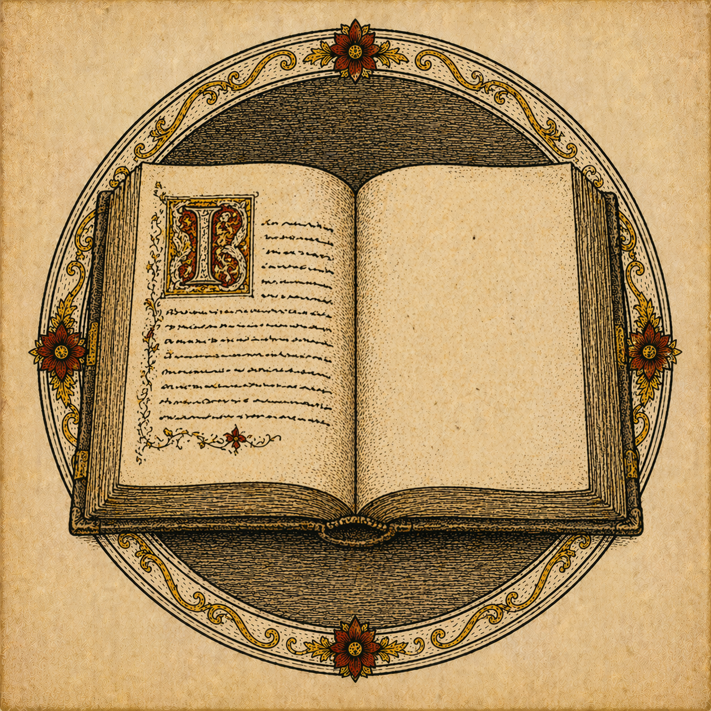

Bibliography
Primary sources, theological texts, depth psychology, and creative literature

Primary sources, theological texts, depth psychology, and creative literature
For the New Reader
The literature of Christian alchemy is vast and can be disorienting. This suggested sequence moves from the accessible to the demanding — from narrative and poetry toward scholarly theology and depth psychology. Follow your curiosity; resist the urge to systematise too early.
Annotated Sources
Key texts are marked and annotated. Entries without annotation are recommended for further reading by the advanced student.
The foundational text of Western alchemy: twelve or thirteen cryptic lines that encapsulate the entire programme. “As above, so below” — the macrocosm-microcosm principle that undergirds both the planetary cosmology and the somatic theology of transformation. Every serious engagement with alchemy must begin here. Read Newton’s translation alongside Jabir’s Arabic version for the full range of the tradition.
The earliest substantial alchemical writer whose works survive, a Graeco-Egyptian practitioner working in Upper Egypt. His visionary texts — in particular the disturbing dreams of a priest being dismembered, calcined, and reborn in a bowl of boiling water — contain the earliest explicit Nigredo imagery in the tradition and provided Jung with his richest material in Alchemical Studies. The Visions are simultaneously chemical notebook, gnostic theology, and proto-psychological revelation.
Perhaps the single most important document for the psychological reading of alchemy. Its twenty woodcut images — depicting the progressive union of King and Queen, Sol and Luna, through bathing, death, putrefaction, and resurrection — provided Jung with the visual programme for Psychology of the Transference (1946). The Rosarium makes explicit what most alchemical texts encode: the central event of the Work is a sacred marriage, and its stages mirror both the Paschal mystery and the arc of individuation.
A magnificent illuminated alchemical manuscript combining Nigredo-to-Rubedo symbolism with extraordinary visual imagery. The painted series of vessels and kings within solar discs constitutes one of the most beautiful visual treatments of the Great Work. The British Library copy (1582) is digitised and freely accessible online.
The great reformer of both medicine and alchemy, Paracelsus introduced the Tria Prima — Sulphur, Mercury, Salt — as a replacement for the classical four elements, giving the tradition a more explicitly Trinitarian symbolic structure. His alchemical theology insists that the physician must be also a theologian and that nature itself is a divine book — an anticipation of Bulgakov’s sophiology and Hopkins’s inscape. Jolande Jacobi’s selected edition is the most accessible English entry-point.
A remarkable text long attributed to Aquinas, in which alchemical and biblical imagery interpenetrate completely — the Wisdom literature of Scripture becomes the language of the chemical Work. Von Franz’s edition and commentary remains the standard scholarly treatment and the finest example of the Jungian alchemical method at full stretch.
An extraordinary multimedia alchemical work combining fifty emblems, fifty epigrams, and fifty fugues for three voices — the only alchemical text designed to be simultaneously read, seen, and sung. Maier was a physician at the court of Emperor Rudolf II, and his work represents the high-water mark of the Renaissance synthesis of music, image, and alchemical philosophy.
Gregory’s Life of Moses is the supreme early Christian account of progressive spiritual transformation — tracing Moses’s ascent from the burning bush through the cloud of Sinai to the divine darkness, a movement from light through darkness to a deeper light that mirrors the alchemical stages with uncanny precision. His concept of epektasis — the soul’s infinite forward-stretching toward a God who is inexhaustibly beyond every attainment — anticipates the alchemical circulatio and the doctrine of ongoing deification.
Written for the monks of Sinai, Climacus’s thirty-rung ladder of virtues and vices provides the most systematic Christian account of the soul’s ascent as an ordered progression through struggle and purification. The parallel with the seven-rung planetary ladder of the alchemists — Lead/Saturn at the base ascending to Gold/Sol — is direct and structural. The text remains a living influence in Orthodox contemplative communities and a touchstone of Christian ascetical theology.
Written in a single night of contemplation on Mount La Verna, the site of Francis’s stigmatisation, Bonaventure’s Itinerarium traces the soul’s ascent through six stages from the vestiges of God in creatures to the loving ecstasy of union. Its structure — from external creation through internal self-knowledge to transcendent union — mirrors the alchemical ascent from Prima Materia to the Lapis Philosophorum.
John of the Cross provides the most rigorous Christian theological account of the Nigredo: the systematic stripping away of consolations, images, and false attachments that precedes genuine union with God. His distinction between the active and passive purgations of sense and spirit corresponds with remarkable precision to the successive operations of the alchemical Nigredo — calcinatio, putrefactio, mortificatio. Kavanaugh’s ICS translation is the standard English scholarly edition. Read The Dark Night first; the Ascent is its doctrinal complement.
Aquinas’s Eucharistic hymn Adoro Te Devote — particularly its sixth stanza on the Pelican (Pie Pelicane, Jesu Domine) — is a key text for the Rubedo theology of the alchemical tradition. The image of Christ feeding the Church from his own wound-side is one of the great Christian Rubedo symbols, and Aquinas gives it its finest theological expression. The Summa’s treatment of grace and the resurrection body repays patient alchemical reading alongside the primary sources.
Bulgakov’s sophiology — his theology of divine Wisdom as the luminous, feminine medium of God’s self-communication in creation — provides one of the richest theological frameworks for the alchemical tradition’s persistent feminisation of the prima materia and the stone. His vision of creation as already suffused with divine Sophia resonates with the alchemists’ sense that the gold was always already present in the lead, waiting to be released rather than manufactured. Sophia: The Wisdom of God is the accessible entry to a demanding but rewarding body of work.
The ancient Christian bestiary that established the pelican and phoenix as figurae Christi. The Pelican’s self-wounding to feed its young, and the Phoenix’s death and resurrection from its own ashes, became the most resonant Rubedo symbols in both Christian iconography and alchemical illustration. The standard modern English translation is Michael Curley’s.
Jung’s first systematic treatment of alchemical symbolism in relation to the psychology of the unconscious. Using a series of dreams from an anonymous patient, he demonstrates the structural parallels between medieval alchemical imagery and the spontaneous products of the deep unconscious. The stone, the king, the hermaphrodite, the filius philosophorum — all are shown to be symbols of the Self undergoing transformation. The most accessible of Jung’s major alchemical works and the necessary starting point.
Jung’s magnum opus on alchemy and the summit of his life’s work, begun in his late seventies and completed after a serious illness. The fullest treatment of the coniunctio as the supreme symbol of psychological and metaphysical wholeness: the sacred marriage of Sol and Luna, Rex and Regina, conscious and unconscious. Dense and demanding, but inexhaustible for the patient reader who comes to it after the earlier works and the primary alchemical texts.
Jung’s autobiographical reflections, dictated in his final years, provide the most accessible entry-point into his thought and the most revealing account of the spiritual and psychological journeys that shaped his alchemical work. His account of his 1944 near-death experience and the visions of the coniunctio he received are among the most remarkable passages in the literature of psychological autobiography. Read this before the technical volumes.
The most sustained and theologically rigorous attempt to show where Jungian depth psychology and Christian theology can genuinely collaborate — and where the line of incompatibility must be drawn. White’s distinction between the psychological God-image and the metaphysical reality of God remains the model for any subsequent engagement. The companion volume of correspondence — The Jung–White Letters, ed. Lammers & Cunningham (Routledge, 2007) — is essential for understanding the productive and ultimately tragic arc of their relationship.
Von Franz was Jung’s closest collaborator and the finest exponent of his alchemical psychology. This accessible introduction — transcribed from a lecture series — remains the best single-volume companion to Jung’s alchemical writings for the non-specialist reader. Her longer scholarly work, Aurora Consurgens (Pantheon, 1966), is essential for the advanced student and demonstrates what a fully realised Jungian-theological reading of a primary alchemical text looks like.
The indispensable reference work for alchemical iconography. Comprehensive, scholarly, and beautifully organised — covering the major symbols, operations, substances, and figures of the Western alchemical tradition with extensive citation of primary sources in Latin and English. Every serious student of alchemy should keep this to hand when reading the primary texts. There is no comparable work.
A revisionist history by a practising chemist-historian, arguing that the alchemists were more serious as experimental scientists than is often assumed, and that much of their symbolic language encodes genuine laboratory procedures. Essential for the historical-chemical context and a necessary counterweight to purely symbolic readings. Principe’s scepticism about the spiritual dimension requires a balancing theological reading, but his scholarship is impeccable and his account of the tradition’s development is unrivalled.
A thorough survey of alchemy’s influence on English literary culture — Chaucer, Spenser, Donne, Milton, and others — making the case that alchemical imagery was part of the intellectual fabric of educated Christian culture, not a fringe curiosity. Particularly valuable for showing how alchemical metaphors penetrated devotional poetry and theological prose.
The leading French scholar of early medieval alchemical imagery. Obrist’s meticulous analysis of manuscript traditions establishes that the Christian transformation of alchemical symbolism was not a late accretion but a constitutive feature of the tradition from its earliest European forms. In French, but indispensable for the advanced student of medieval alchemical iconography.
Dante’s third canticle is the supreme Christian imaginative treatment of the soul’s ascent through the seven planetary spheres to the beatific vision — constituting what amounts to a Christian alchemical cosmology in verse. Each planetary heaven corresponds to a different virtue and a different quality of light. Cantos I–III (Moon/Silver, the lunar Albedo) and XXII–XXXIII (the ascent beyond the fixed stars to the Empyrean Rubedo) are especially rich for the alchemical reader. Kirkpatrick’s facing-text Penguin edition is the best for the non-specialist.
Till We Have Faces — Lewis’s retelling of the Psyche myth, widely regarded as his finest work — is a sustained literary exploration of Nigredo, shadow, and the painful stripping of the false self. The novel’s final turn, in which Orual’s lifelong complaint collapses into wordless adoration, enacts precisely the Rubedo resolution of the Opus. The Great Divorce dramatises the doctrine of theosis in the tradition of MacDonald and Dante: the progressive transformation of the human creature toward divine light.
Hopkins’s concept of inscape — the distinctive thisness of each created thing that reveals its participation in divine being — provides a poetic theology that resonates deeply with the alchemical vision of matter as spiritually significant. “The world is charged with the grandeur of God” (God’s Grandeur) is the finest short statement in English of the sacramental vision that undergirds Christian alchemy. The Wreck of the Deutschland enacts a Nigredo-to-Rubedo movement of extraordinary intensity.
Tolkien’s essay on fairy-stories — and in particular his concepts of eucatastrophe (the sudden joyous turn at the end of the Opus) and sub-creation (human making as participation in divine creativity) — provides a literary-theological framework for the alchemical imagination. Smith of Wootton Major is the most alchemically resonant of his shorter fictions: the star-fragment on the tongue as the Lapis given unasked.
MacDonald’s fantasy novels — which Lewis called his “master” — are among the most sustained literary enactments of the alchemical journey in English. Lilith in particular traces a full Nigredo-to-Albedo arc through dream, death, and resurrection in a manner that reads as though MacDonald had absorbed the Rosarium Philosophorum through the pores.
A Living List
This bibliography is a beginning, not a boundary. The tradition it describes is alive — read, pray, and let the texts read you in return. Ora et labora.
← Return to the Opus Magnum